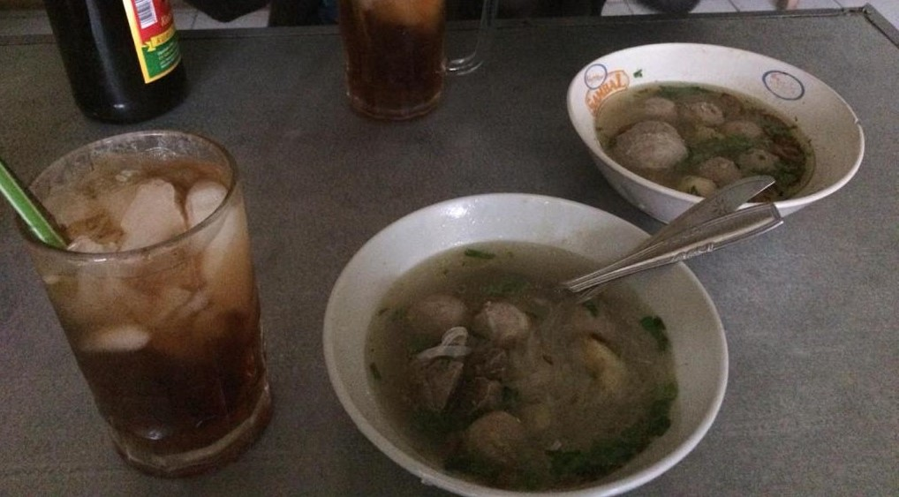

No Food, No Good
The local food of Purworejo.
Bakso

You can basically find bakso anywhere in Purworejo. The rich taste of meatballs combined with fresh broth, along with
the companion of iced tea – I can never resist the temptation to order a second bowl. Or a third.
Dawet Ireng

This is your best friend on a hot sunny day. The coolness of the ice, the sweet brown sugar, and of course the star of
the show, dawet!
Geblek

Geblek may not be rich in taste, but eaten while warm, the crunchiness of the skin meets the chewiness of the inside
will make your taste bud dance in joy.
❮
❯